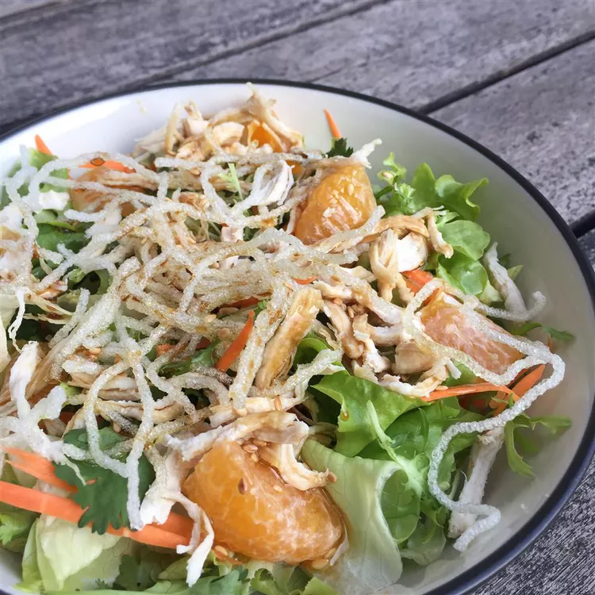

Chicken Salad

Description
This recipe for simple baked chicken breasts involves coating the chicken with olive oil and seasoning it with salt and pepper. Then, you bake the chicken in the oven until it's tender and juicy. It's an easy and healthy way to prepare a delicious meal.
Ingredients
Dressing
- ¼ cup vegetable oil
- 3 tablespoons rice vinegar
- 2 tablespoons brown sugar
- 1 tablespoon sesame oil (Optional)
- 2 teaspoons soy sauce
Salad
- 1 head iceberg lettuce - rinsed, dried, and chopped
- 4 boneless chicken breast halves, cooked and shredded
- 3 green onions, chopped
- 1 tablespoon sesame seeds, toasted
- 1 ½ tablespoons olive oil, or as needed
- 1 (8 ounce) package dried rice noodles
Steps
- Gather all ingredients.
- Make the dressing: Shake oil, vinegar, brown sugar, sesame oil, and soy sauce together in a small lidded container. Set aside until salad is ready.
- Make the salad: Combine lettuce, chicken, green onions, and sesame seeds in a large bowl. Cover and chill for 10 minutes.
- While the salad is chilling, heat oil in a skillet over medium-low heat. Break rice noodles into pieces and fry in the hot skillet in small batches until they begin to puff up, 15 to 25 seconds. Remove to a paper towel-lined plate to drain.
- Remove salad from the refrigerator. Portion into salad bowls, top with fried rice noodles, and drizzle dressing over top.
Back